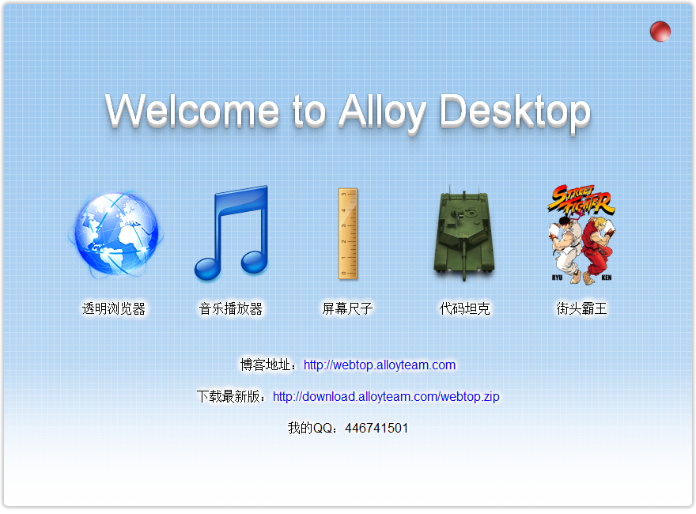
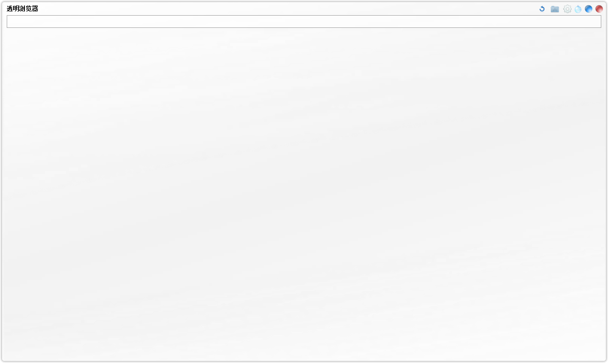

概览
AlloyDesktop？这是一个什么东西呢？这是一个能将网页像软件一样运行在桌面上的app开发引擎。该引擎实现了对网页的透明渲染，使网页不再局限于浏览器的框框。同时，提供强大的api支持，使你能轻松实现许多传统网页实现不了的功能，诸如窗口控制，文件IO，图像处理……可以这样说，一般软件所能实现的大部分功能，利用AlloyDesktop开发的app也能实现，而且实现起来更快更容易。另外，它还具备传统软件所不具备的优势，那就是强大的界面渲染能力。利用html5和css3的新特性，你可以轻轻松松实现阴影透明等特效。相对于市面上许多软件界面开发引擎，网页开发的门槛相对来说要低得多，而且是一个通用的标准。利用该引擎，可以开发诸如QQ，浏览器，播放器，PS等软件。
下面简单讲下该引擎的运行原理。该引擎运行app时，先读取一个后缀名为.app的配置文件，再通过读取配置文件的相关参数获得网页的地址以及窗口大小等其他相关的配置。然后启动一个透明浏览器，加载相应的网页。网页中可以通过js调用引擎提供的api，实现一些本地app的功能，即使用普通浏览器浏览网页时网页实现不了的功能。
下载地址：http://download.alloyteam.com/webtop.zip
官方群：257960168
该引擎目前还处于beta阶段，以下为使用改引擎开发的app的部分界面的截图。

引擎初始界面，放了几个demo。

透明浏览器
音乐widget
屏幕尺子
……
API文档
注：以下函数的最后一个参数都为handler，代表窗口句柄，不传则使用本窗口的句柄，只有在操作其他窗口时才有作用。请不要在全局变量中使用handler这个变量名。以下API都是属于AlloyDesktop对象的，调用时请用AlloyDesktop.xx调用。
窗口相关
- bringToTop(handler);//窗口移到最顶层
- browse(url,handler);//在新进程中使用默认的透明浏览器浏览网页，url为网页路径
- close(handler);//关闭窗口
- createBrowser(url,handler);//在新进程中打开一个webtop窗口，url为网页路径
- createWindow(url,exStyle,isTransparent,readyHandler,handler)//在当前进程中创建一个窗口，并返回窗口句柄，readyHandler为窗口网页加载后要执行的js代码，此函数或将废弃
- createWindowBase(url,exstyle,isTransparent,readyHandler,handler);//同上，区别在于使用本地相对路径，此函数或将废弃
- drag(handler);//拖拽窗口
- enableDrag(handler);//允许拖拽窗口，同配置参数enableDrag=1作用相同。
- focus(handler);//使窗口获得焦点
- getPos(handler);//获得窗口位置，返回值为一object，格式如下{x:13,y:54}
- getScreenSize(handler);//获取屏幕大小，返回值为一object，格式如下{width:130,height:54}
- getSize(handler);//获得窗口大小，返回值为一object，格式如下{width:130,height:54}
- hide(handler);//隐藏窗口
- loadUrl(url,handler);//加载网页，url为网页路径
- max(handler);//最大化窗口
- mini(hander);//最小化窗口
- move(x,y,handler);//移动窗口
- ready(handler);//只对被创建出来的窗口有用，执行父窗口闯过来的js代码readyHandler
- reload(handler);//重新加载当前页面
- reloadIgnoreCache(handler);//重新加载当前页面并忽略缓存
- restore(handler);//还原窗口，对应于hide函数
- runApp(appName,param,handler);//运行一个app，appName为.app文件路径，param为参数，会带在url上，格式如param=xxx，在app中可通过获取当前网页url从中提取出该参数。此函数不太稳定，请尽量使用runAppEx。
- runAppEx(appName,param,handler);//也是运行一个app，同runApp的区别是会新起一个进程运行app
- setSize(w,h,handler);//w为窗口宽度，h为窗口高度
- setTitle(title,handler);//设置窗口标题
- setTopMost(handler);//窗口置顶，此函数跟bringToTop的区别在于此函数会使窗口永远置顶，除非有另外一个窗口调用了置顶函数
- setWindowStyle(exStyle,handler);//高级函数，设置窗口额外属性，诸如置顶之类。
- showDev(handler);//打开开发者工具
- stopDrag(handler);//停止窗口拖拽
图像相关
- saveImageFromBase64(s,path,handler);//s为base64字符串，可通过canvas的toDataURL函数生成，path为保存路径，可以使用相对路径，即相对主网页文件的路径，以下同
- saveImageFromStream(id,width,height,path,handler);//id为二进制流id,下面会讲到如何创建二进制流，width为图像宽度，height为图像高度，path为图像保存路径
- toImage(path,handler);//把当前网页存为一张图片，支持透明，path为图像保存路径
- toImageEx(path,x,y,width,height,handler);//把当前网页的某一矩形区域存为图像，x和y为左上角坐标，width和height为宽度跟高度，ptah为图像保存路径
系统相关
- setTaskIcon(id,path,title,handler);//设置一托盘图标，id自己指定，确保不重复即可，path为图标文件所在路径，暂时只支持本地图标，title为鼠标移到图标上所要显示的文字
- delTaskIcon(id,handler);//删除一托盘图标，id为创建图标时使用的id
- findFiles(path,flag,handler);//查找文件，path为文件路径，支持通配符，flag为true则查找子目录，返回格式为一数组，格式如下”["1.txt","AmfStream.cpp","AmfStream.h",{"name":"base","list":["2.txt"]}]，其中name为目录名，list为目录下的文件
- getCurrentDirectory(handler);//获取当前app文件所在目录
- getFolder(handler);//打开“选择文件夹”对话框，返回值为文件夹路径
- getFileSize(filename,handler);//获得文件大小，filename为文件路径，返回值为文件所占字节数
- getOpenName(filename,handler);//打开“打开文件”对话框，filename为对话框中要显示的默认名字，返回值为文件路径
- getOpenNames(filename,handler);//打开“打开文件”对话框，支持多选，filename为对话框中要显示的默认名字，返回值为一个数组，数组头一个元素为文件夹路径，剩余的元素为选择的各个文件名字。
- getSaveName(filename,handler);//打开“保存文件”对话框，filename为对话框中要显示的默认名字
- download(url,filename);//下载一文件，url为网址，filename为要保存的文件路径
- readFile(path,handler);//读取一文本文件的所有内容，返回值为文件内容的字符串
- writeFile(path,s,handler);//写一文本文件，s为要写入的字符串
- logOff(flag,handler);//注销windows系统，flag为true表示强制执行，以下同
- reboot(flag,handler);//重启系统
- quit(handler);//退出当前进程
- shutdown(flag,handler);//关闭系统
- createMemory(name,filename,size,handler);//创建一共享内存块，供二进制流读写使用，name为内存块命名，不同进程可通过此名字进行共享内存操作，filename文件路径，如果不为空，则建立一磁盘文件，所有二进制操作将会写入此文件中，为空的话则不创建文件，所有的二进制流只在内存中进行，size为文件大小，返回值为代表内存块的id
- createStream(id,handler);//创建一二进制文件流，id为调用createMemory函数创建内存块的返回值，返回值为代表二进制流的id
- deleteMemory(id,handler);//释放一内存块，id为createMemory函数的返回值。使用createMemory之后要记得调用此函数释放内存，否则会造成内存泄漏。
- deleteStream(id,handler);//释放一二进制流，id为createStream函数的返回值。使用createStream之后要记得调用此函数释放内存，否则会造成内存泄漏。
- getSharePos(handler);//获取默认共享内存块的二进制流读写指针位置。注：此内存块为所有进程共享，默认创建的
- setSharePos(i);设置共享内存块的二进制流读写指针位置
- getStreamPos(id,handler);//获取一二进制流的读写指针位置，id为二进制流id，单位为字节，id为二进制流id，不传则使用上面提到的默认的共享内存的二进制流，以下同
- setStreamPos(pos,id,handler);//设置一二进制流读写指针的位置，单位为字节
- readByte(id,handler);//读取一字节
- readBytes(l,id,handler);//读取连续内存块，l为内存块的长度，返回一二进制数组
- readInt(id,handler);//写入一占四位字节的整数
- readGB(l,id,handler);//读取固定长度的GB2312编码的字符串，l为字符串长度，注意一个汉字的长度为2
- readString(l,id,handler);//读取固定长度使用utf-8编码的字符串，l为字符串长度，以下同，注意一个汉字的长度为3
- readStringEx(l,id,handler);//读取固定长度的字符串，对应于writeStringEx。
- readWString(l,id,handler);//读取固定长度的宽字符串，一个宽字符占两个字节，无论英文或是中文，但是传递长度的参数时无需乘以2，只需传字数即可
- readWStringEx(l,id,handler);//读取固定长度的宽字符串，对应于writeWStringEx
- writeByte(b,id,handler);//向一二进制流写入一字节，b为要写入的数字
- writeBytes(arr,id,handler);//向二进制流写入固定长度的连续字节，arr为存储要写进去的数据的数组
- writeInt(i,id,handler);//读写一占四字节的整数
- writeString(s,id,handler);//写入一字符串
- writeStringEx(s,id,handler);//写入一字符串，与writeString不同的是此函数会在字符串前面写入三个字节，标明字符串的长度。
- writeWString(s,id,handler);//写入一宽字符串
- writeWStringEx(s,id,handler);//写入一宽字符串，与writeWString不同的是此函数会在字符串前面写入三个字节，标明字符串的长度。
P2P相关
- connect(ip,uid,handler);//连接到服务器，ip为服务器地址，uid为用户名，服务器在内网则使用内网地址，在外网就使用外网地址
- getIPAndPort;//获取当前webtop窗口所使用的ip和端口号，返回值为一object，结构如下：{ip:’192.169.0.102′,port:65345}
- getUsers(handler);//获取所有用户列表，该函数不会同步返回用户列表，调用后请监听webtopP2PUpdateUserList事件来得到用户列表，下面关于自定义事件部分会详细谈到。
- connectByHost(hostName,uid,handler);//连接到服务器，hostName为服务器名称，可以为局域网机器名字或者域名，uid为用户名
- sendMessage(userName,msg,handler);//向一用户发送消息，userName为用户名称，msg为要发送的消息
- sendMsgToIP(ip,port,msg,handler);//向某一ip地址发送消息，参数ip为ip地址，port为端口号，msg为要发送的消息
- sendMsgToServer(msg,handler);//向server发送消息
自定义事件
webtop中定义了一些自定义事件，如下 注，所有事件的回调函数都只有一个参数e，代表事件对象，其中e.detail对象为一object，包含事件的相关信息
- AlloyDesktopReady事件，webtop对象创建完成之后触发，有关webtop的初始化调用请放在此事件触发之后。 监听代码：addEventListener(“webtopReady”,readyHandler);//其中webtopReady为事件名，readyHandler为事件的回调函数。以下事件的监听方法与此相同。注：对AlloyDesktopReady事件的监听请放在onload之前。
- AlloyDesktopWindowResize：webtop窗口改变大小之后触发，e.detail的结构如下{width:243,heigh:234}。width和height为窗口的宽度和高度
- AlloyDesktopWindowMove：webtop窗口移动后触发，e.detail结构如下{x:34,y:43}，x和y为窗口的坐标，相对于屏幕
- AlloyDesktopDragDrop：当拖拽文件到窗口时触发，仅在透明渲染模式下有效（因为在此模式下html5的拖拽功能会失效）。e.detail的结构如下{list:["E:/webtop/1.png","E:/webtop/2.png"]}。list为文件列表，存储各个文件的路径
- AlloyDesktopDownload：下载进度事件，e.detail的结构如下{filename:”xx”,count:423,contentLength:234234}，filename为文件路径，count为已下载字节数，contentLength为要下载内容的字节数。
- AlloyDesktopDownloadComplete，下载完成事件。
- AlloyDesktopWindowActive：窗口激活时触发
- AlloyDesktopWindowFocus：窗口获得焦点时触发
- AlloyDesktopRefresh：//在用户按下F5时触发，仅在配置项disableRefresh=0时才会触发
- AlloyDesktopShowDev：//在用户按下F12时触发，仅在配置项disableDevelop=0时才会触发
- AlloyDesktopTaskMouse：在托盘图标上进行相关的鼠标操作后触发，e.detail的结构如下{type:34}，其中type代表鼠标动作的类型，为一整数，在实际开发中可通过打log来获取相关数值代表的鼠标类型
- AlloyDesktopWindowClose：webtop窗口被关闭时触发
- webtopMouseLeave：鼠标离开webtop窗口时触发
- webtopShowTip：在鼠标移到具有title属性的dom元素上面时触发（webtop没有实现默认的tips）
- webtopP2PRecieveMessage：在webtop窗口收到p2p消息时触发，e.detail的结构如下：{ip:’192.168.0.102′,port:64656,msg:’sfsdfsfasdf’}。ip为发送方的ip，port为发送方的端口，msg为对方发送的消息
- AlloyDesktopP2PInitInfo：调用connect之后，p2p初始化之后触发，e.detail的结构如下：{ip:’192.168.0.102′,port:64656}。ip为当前webtop窗口使用的ip，port当前webtop窗口使用的端口
- AlloyDesktopP2PUpdateUserList：调用getUsers函数之后的回调事件。e.detail的结构如下{list:['192.168.0.102:55654_melody','192.168.0.101:55354_yukin'],ip:’192.168.0.102′,port:64656}。其中192.168.0.102为该用户的ip，55654为该用户的端口，melody为该用户的用户名。ip为当前webtop窗口使用的ip，port当前webtop窗口使用的端口